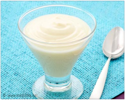

ေဘာက္ ထျခင္း


၁။ ဆီမလိမ္း ခင္ ဦး ေရကို အရင္ သန္႔ စင္ ပါ။
၂။ ဆံပင္ ေတြ စို ေနခ်ိန္ မွာ ေခါင္း ဖီးျခင္း က ေျခာက္ ေနခ်ိန္ မွာ ေခါင္း ဖီးျခင္း လိုပဲ ဆံပင္ ေတြကို ကၽြတ္ ဆတ္ က်ိဳးပဲ့ ေစႏိုင္ ပါတယ္။ ဒါေၾကာင့္ ဘီးအစား လက္ ကို အသံုးျပဳသင့္ ပါတယ္။
၃။ ဦး ေရကို ဆီလိမ္း ျပီး ႏွိပ္ နယ္ ျခင္း က ေသြးလည္ ပတ္ မႈကို ေကာင္း ေစလို႔ ေဘာက္ ထသူမ်ား မၾကာခဏ ျပဳလုပ္ သင့္ ပါတယ္။

၄။ ၾကက္ ဥ၁လံုးႏွင့္ ဒိန္ ခ်ဥ္ ၁ခြက္ တို႕ကို ေရာ ေမႊကာ ဦး ေရျပား ေပၚတြင္ လိမ္း ပါ။ မိနစ္ ၃၀ခန္႔ အၾကာတြင္ ေခါင္း ေလွ်ာ္ပါ။

၅။ သံလြင္ ဆီလက္ ဘက္ ရည္ ဇြန္း ၁ဇြန္း ကို သံပုရာရည္ လက္ ဘက္ ရည္ ဇြန္း ၁ဇြန္း ႏွင့္ ေရာျပီး လိမ္း ပါ။ ျပီးေနာက္ အဝတ္ စတစ္ ခုႏွင့္ ပတ္ပါ။ တစ္ ညလံုးထားျပီး မိုးလင္း မွ ေခါင္း ေလွ်ာ္ ပါ။
၆။ ဆီတစ္ မ်ိဳးကိုလိမ္း ျပီး အိပ္ ပါ။ မနက္ လင္း က သံပုရာရည္ လက္ ဘက္ ရည္ ဇြန္း ၁ဇြန္း ကို ဆားလက္ ဘက္ ရည္ ဇြန္း တဝက္ ႏွင့္ ေရာျပီး လိမ္း ပါ။ သံပုရာသီး အခြံႏွင့္ ဦး ေရကို ပြတ္ သတ္ ပါ။ မိနစ္ ၃၀ခန္႔ အၾကာတြင္ ေခါင္း ေလွ်ာ္ ပါ။